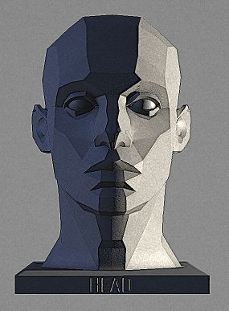
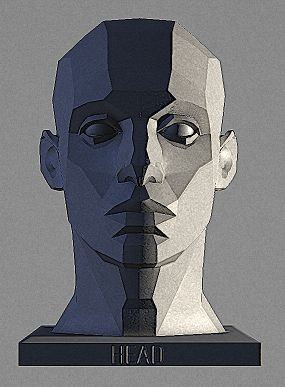

BenCruze

BenCruze
BenCruze

BenCruze |
Names | Experience | Country | Skill |
|---|---|---|---|---|
|
James | 2-3 years | Nigeria | Web deavelopment/DigitalArt |
|
derrick | 2-3 years | London | Web deavelopment |
|
Gbana | 1-2 years | Ghana | Blender/animation |
|
Mary | 0-1 years | USA | Illustration/DigitalArt |